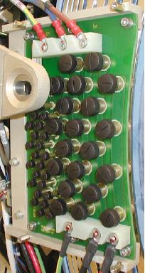

Proprietary to General Electric
Direction 5307452-8EN, Rev# 4
Discovery CT750 HD Service Methods - Adv
Proprietary to General Electric |
| Last Revised | 22 October 2008 |
| ELECTROCUTION HAZARD | |
| HIGH VOLTAGE PRESENT | |
| Use proper Lockout/Tagout procedures before servicing equipment |
| POTENTIAL FOR EQUIPMENT DAMAGE | |
| USING A VACUUM HOSE NEAR LIVE ELECTRONIC EQUIPMENT MAY CAUSE EQUIPMENT DAMAGE DUE TO STATIC. | |
| make sure equipment is turned OFF prior to vacuuming. |
The following items may cause problems with the slip rings:
| |
Remove the rear gantry cover support bracket, which is over the top of the brush block assembly (see Illustration 1).
Illustration 1: Slip Ring Brush Block

Remove the slip ring safety covers.
Remove the slip ring covers.
| NOTE: | Some systems may have a cover spacing bolt at the right side of the gantry. Remove this bolt and remove the lower cover. |
Use a HEPA vacuum cleaner to remove residual brush debris. Remove all debris from the brush blocks, brackets, slip rings, and slip ring covers.
| NOTE: | Properly seasoned tracks have a brownish-black lubricant on the ring. This patina of carbon/silver is 0.002 - 0.003 mm thick and self-renewing. Do Not remove this film of lubricant. |
(For procedure, see Slipring Brush Disconnects Troubleshooting.)
Disconnect all connections to the brush block. See Illustration 2.
Illustration 2: Slipring Brush Block Assembly

Remove the four-6 mm cap screws that secure the brush block assembly to the gantry.
Carefully remove the brush block.
Tap brush block lightly with a small hammer to dislodge the dust particles from the brush block.
Thoroughly vacuum the signal and power brushes.
Inspect each brush tip for wear. Each tip has a triangle stamped on one side (see Illustration 3.) When the brush wears to the point of the triangle, the brush must be replaced. (For replacement procedures see Slipring Brush Block Replacement.)
Illustration 3: Inspection of Brush Tip for Wear

Carefully install the brush block by exerting even pressure perpendicular to the ring surface.
Secure the brush block with the four-6 mm cap screws. DO NOT tighten yet.
Carefully push the brush block against the position adjustment set screws in the mounting bracket.
Remove two brushes from the inside HVDC ring top and bottom. Remember the orientation for later installation
Use a flashlight to verify block position is adjusted so the brushes ride in the center of their tracks. Adjust the brush block setscrews, if necessary, to center the brush.
Torque the four-6 mm cap screws to 7.9 N-m (70 in-lbs. or 5.8 ft-lbs.).
Re-install the two brushes removed to inspect the alignment.
Re-install connections to the brush block per the cable labels.
Re-install the brush block cover.
Re-install the slip ring covers.
Re-install the gantry cover mount over top of the brush block.
Vacuum the brush debris that may have been deposited on the gantry base and floor during servicing.
Wash your hands thoroughly after servicing any slip ring components.